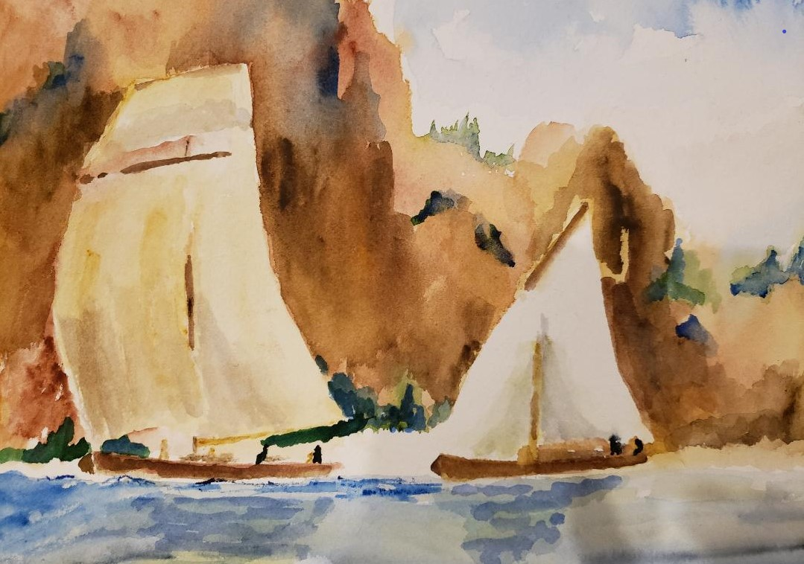

Lakes Region Watercolor Guild
Ned was a member and historian of the Lakes Region Watercolor Guild. The Guild members create beautiful and distinctive views from the heartland capturing ambiance of Lake County Illinois
Ned was a member and historian of the Lakes Region Watercolor Guild. The Guild members create beautiful and distinctive views from the heartland capturing ambiance of Lake County Illinois